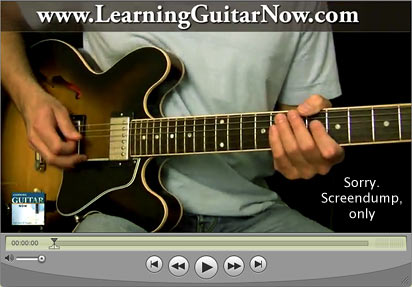
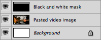
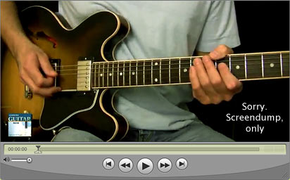
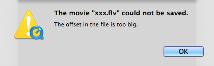

How to crop a movie with QuickTime Pro
First published on Ka of Isis 100828
Note: This tutorial was tested with QuickTime Pro 7.6.4.
Fig. Screendump of QuickTime Player showing the first frame of the original movie.
Make a copy of the original movie and proceed with the copy.
1. Open the movie in QuickTime Pro.
2. Move the play head to find the frame that most easily shows the areas that need to be cropped.
3. Right-click on the frame (or choose Edit > Copy) to copy the frame image.
4. Open an image editor (the following procedure applies to Photoshop).
5. Choose File > New… and accept the proposed settings (Photoshop uses the image already in memory to suggest dimensions etc).
6. Paste the image into the Photoshop file.
7. On a new layer above the image, mask out everything you want to keep, with black, and leave the borders (most likely) to be discarded, white. In our example we want to get rid of the top banner with the web address.
Tip: Trim to even numbers for movie width and height as this (at least theoretically) will yield sharper images if the movie is scaled in a user agent.
Fig. Photoshop layers with black and white mask topmost.
8. Flatten image.
9. Save as PNG-8 for web and devices.
10. Back in QuickTime Pro, choose Window > Show Movie Properties.
11. Highlight the video properties by clicking on the row with the Video Track name.
12. Choose the Visual Settings tab.
13. In the Mask area, click the Choose… button.
14. In the dialogue box, open the PNG-8 mask. (The black and white image is reflected in the Mask window and the QuickTime movie dimensions – as seen in the Player – change accordingly). Note that the Transformation data do not update (in our example the old height of 360 pixels is still showing even if the final movie will be 312 pixels tall).
Update: If the mask does not show up properly, try hitting the Invert-button twice.
Fig. Movie properties with mask applied.
At this stage it is also possible to scale the movie, but leave Preserve Aspect Ratio checked unless you have special needs.
15. Save the movie (you were working on a copy, right?).
Fig. Screendump of QuickTime Player showing the first frame of the final movie.
Update: I have encountered the following problem with FLV-movies ripped from YouTube:
If you experience this, too, try saving the file to a MOV-format movie without compression first, then retry cropping based on the mask.